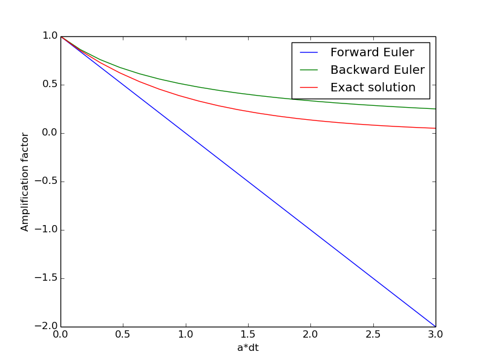

Stability analysis of the Fisher Kolmogoroff equation
Stability analysis of the Fisher Kolmogoroff equation
Torbjørn Seland [1, 2]
[1] Departments of Mathematics, University of Oslo
[2] Center for Biomedical Computing, Simula Research Laboratory
Sep 24, 2014
$$
\newcommand{\p}[2] {#1_{\text{#2}}}
$$
Fisher-Kolmogoroff equation
This little paper will be a study of the stability criteria for the Fisher-Kolmogoroff equation, now referred to as FK. This equation was first proposed by Fisher to describe the spread of an advantageous gene in a population. It was later developed by Kolmogoroff. The equation can be described
$$
\begin{equation} \label{eq:fish_kol}
\frac{\partial u}{\partial t} = \alpha\frac{\partial^2u}{\partial x^2}+ru(1-\frac{u}{M})
\end{equation}
$$
Where the first part describe the spatial spread and the second part describe the local chemical reaction.
Analytical stability analysis
A technique to find the analytical stability is by Von Neumann's Stability Analysis. This will be based on the technique from Introduction to Partial Differential Equations by Tveito & Winter [1]
Stability
Some adjustments need to be done to FK to be able to solve it. The last part of \eqref{eq:fish_kol} describe the chemical reaction and is a nonlinear part. This will be simplified to a linear expression expressed with a constant \( B \) for the nonlinear part
$$
\begin{equation}
B = r(1-\frac{u}{M})
\end{equation}
$$
The FK equation can then be discretized as following
$$
\begin{equation} \label{eq:reac_stab}
u_t = \alpha u_{xx} + Bu
\end{equation}
$$
The main goal is to solve this equation numerically with a Backward Euler discretization ,referred as BE, for the time derivative and a Crank Nicolson discretization, referred as CN, for the spatial derivative. But this consist of a couple of problems. Therefore this will be done in five steps where Forward Euler discretization, referred as FE, will be compared to BE.
Amplification factor
The first task is to find the amplification factor for FE and BE on the following equation.
$$
\begin{equation}
u' = -au, \hspace{8mm} a>0
\end{equation}
$$
Forward Euler
$$
\begin{align*}
\frac{u^{n+1}-u^n}{\Delta t} =& -au^n\\
u^{n+1}=& (1-\Delta t a)u^n\\
u^{n}=& (1-\Delta t a)^nu^0\\
u^{n}=& \p{A}{fe}^nu^0
\end{align*}
$$
Where the following amplification factor for FE is \( \p{A}{fe}= (1-\Delta t a) \) and can be see
Backward Euler
$$
\begin{align*}
\frac{u^{n}-u^{n+1}}{\Delta t} =& -au^n\\
u^{n}=& \frac{u^{n-1}}{1+\Delta t a}\\
u^{n}=& \left(\frac{1}{1+\Delta t a}\right)^nu^0\\
u^{n}=& A_{be}^nu^0
\end{align*}
$$
The amplification factor for BE is \( \p{A}{be} = \left(\frac{1}{1+\Delta t a}\right) \)
These amplification factors and the exact solution can be plotted against \( a*\Delta t \) which will give an indication on the stability for these amplification factors.
Figure 1: Amplification factor plotted against \( a*\Delta t \) for BE,FE and the exact solution.

Both amplification factors goes towards zero when \( a*\Delta t \) is small enough. This is quite as expected since a small \( \Delta t \) always will give a good solution. But in the case where \( a*\Delta t \) is large, the difference is more critical. BE is able to stay above the exact solution the whole time. This is quite easy to see by looking the amplification factor for BE. When increasing \( a*\Delta t \) the denominator will increase. This means that \( \p{A}{fe} \Rightarrow 0 \) when \( a*\Delta t \Rightarrow \infty \) and will therefore never give any problem with oscillation or growing solution.
For BE is this not the same case. When \( a*\Delta t \) decrease towards 0, the amplification factor will increase towards 1 similar as for FE and the exact solution. The problem arise when \( a*\Delta t \) become to large. From the figure(1) it can be seen that the amplification factor reaches about -2 when \( a*\Delta t = 3 \). This would lead to major errors and a growing oscillation problem. To avoid this problem, the stability criteria for BE has to be found. To avoid an oscillating solution \( \p{A}{be}>0 \) has to be fulfilled.
$$
\begin{align*}
\p{A}{be}>& 0\\
(1-a\Delta t)>& 0\\
1 >& a\Delta t
\end{align*}
$$
The stability criteria for BE will therefore be \( a\Delta t < 1 \)
Forward Euler for Fisher-Kolmogoroff when B<0 and \( \alpha > 0 \)
Use the same idea as for Backward Euler in the section above. The equation can then be expressed.
$$
\begin{align} \label{eq:a_k_forward}
\frac{a_k-1}{\Delta t} =& \alpha\frac{e^{-ik\pi \Delta x}-2+e^{ik\pi \Delta x}}{\Delta x^2} + B \notag\\
a_k =& 1-\alpha\frac{4 \Delta t}{\Delta x^2}\sin^2(\frac{k\pi\Delta x}{2}) + B\Delta t
\end{align}
$$
Since \( B \) is sat to be negative, a new variable \( D \) can be introduced
$$
\begin{equation} \label{eq:b_d}
B = -D,\hspace{8mm} D>0
\end{equation}
$$
And then use this.
$$
\begin{align}
a_k =& 1-\Delta t(\frac{\alpha 4}{\Delta x^2}\sin^2(\frac{k\pi\Delta x}{2})+ D)
\end{align}
$$
\( a_k \) is not able to grow larger than 1, but \( a_k < -1 \) is still possible and will give oscillations. The worst case for \( sin^2(\frac{k\pi\Delta x}{2})=1 \). To avoid oscillations the following requirement has to be true.
$$
\begin{align*}
\Delta t(\frac{\alpha 4}{\Delta x^2}\sin^2(\frac{k\pi\Delta x}{2})+ D)\leq 2\\
\Delta t(\frac{\alpha 4}{\Delta x^2}+ D)\leq 2\\
\Delta t \leq \frac{2}{(\frac{4\alpha }{\Delta x^2}+ D)}
\end{align*}
$$
This gives a relation between \( \Delta t \) and \( \Delta x,\alpha,B \).
Bibliography
- A. Tveito and R. Winther.
Introduction to Partial Differential Equations: a Computational Approach,
Springer,
2005.